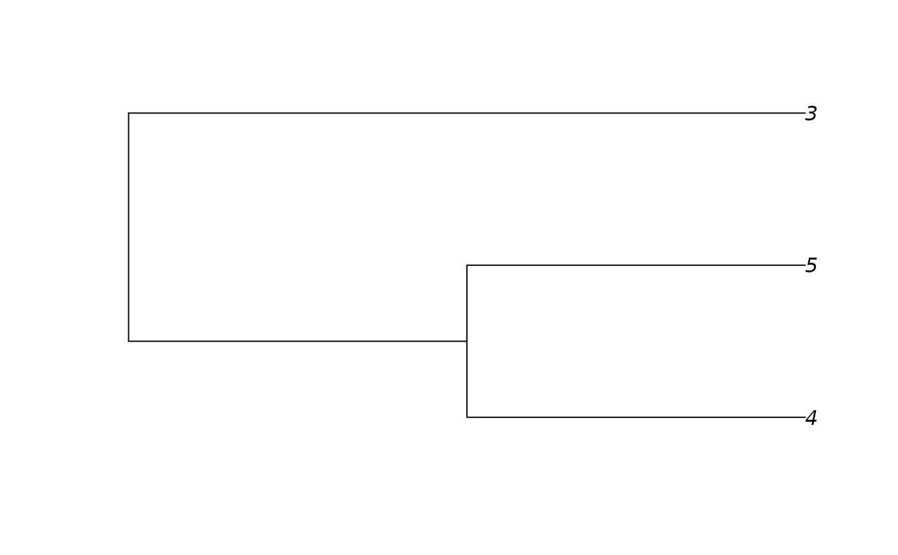

This function takes an edgelist and recodes (relabels) the nodes following ape's coding convention.
# S3 method for matrix as.phylo(x, edge.length = NULL, root.edge = NULL, ...) # S3 method for aphylo as.phylo(x, ...)
| x | Either an edgelist or an object of class aphylo. |
|---|---|
| edge.length | A vector with branch lengths (optional). |
| root.edge | A numeric scalar with the length for the root node (optional). |
| ... | Further arguments passed to the method. |
An integer matrix of the same dimmension as edges with the following
aditional attribute:
Named integer vector of size n. Original labels of the edgelist
where the first n are leaf nodes, n+1 is the root node, and the reminder
are the internal nodes.
# A simple example ---------------------------------------------------------- # This tree has a coding different from ape's mytree <- matrix(c(1, 2, 1, 3, 2, 4, 2, 5), byrow = TRUE, ncol=2) mytree#> [,1] [,2] #> [1,] 1 2 #> [2,] 1 3 #> [3,] 2 4 #> [4,] 2 5ans <- as.phylo(mytree) ans#> #> Phylogenetic tree with 3 tips and 2 internal nodes. #> #> Tip labels: #> 3, 4, 5 #> Node labels: #> 1, 2 #> #> Rooted; no branch lengths.